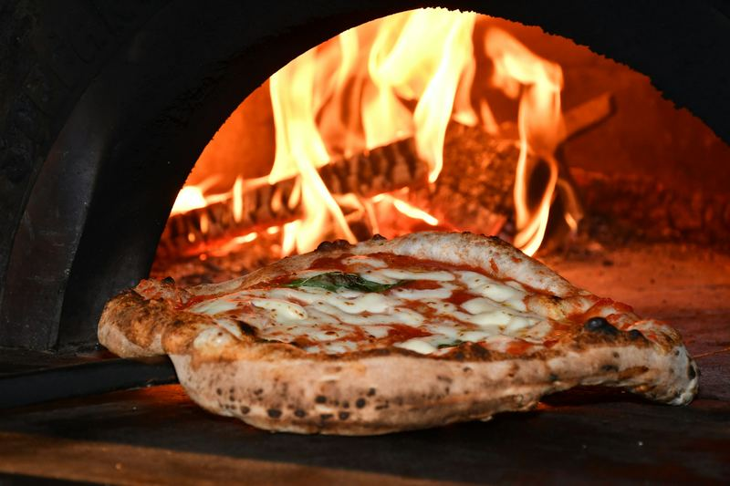
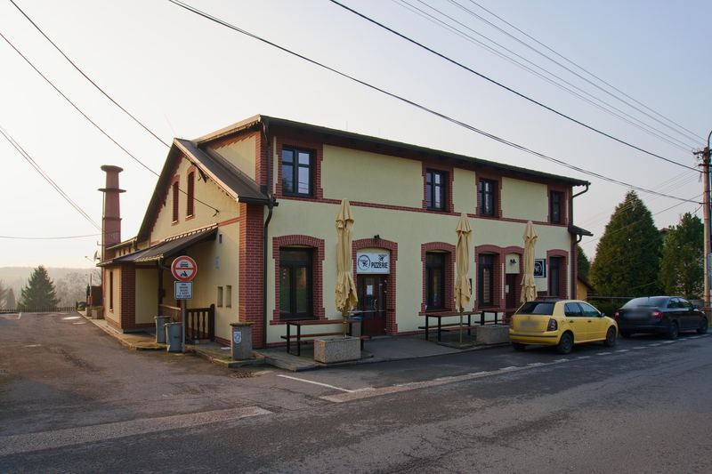
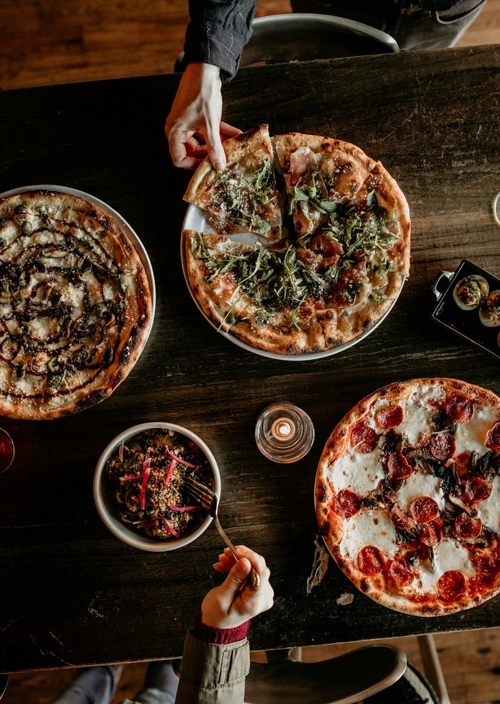
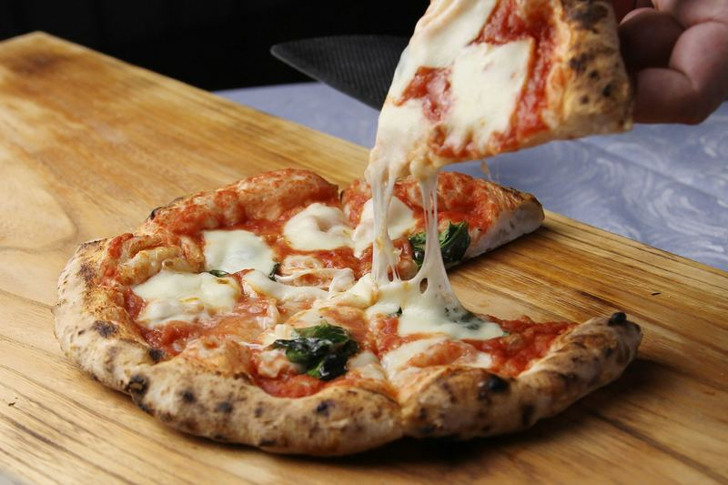

Pizza
Pizza, na kterou se vracejí celé rodiny. Na doporučení, jak píšou hosté.
Pizzerie Tamarín. Malá útulná restaurace s dětským koutkem. Pizzu si můžete dát u nás, nebo si ji objednejte telefonem na určitý čas a vyzvedněte.
Út–pá 17–22, so 14–22, ne 13–21

Vyberte, kdy si pro pizzu přijedete. Zavolejte nebo pošlete SMS a pizza bude na čas připravená.
Dnes

Pizza, na kterou se vracejí celé rodiny. Na doporučení, jak píšou hosté.

Restaurace je menší, ale útulná. Děti si zatím pohrají v dětském koutku.

Objednejte telefonem na určitý čas a pizza bude připravená, až přijedete.
„Objednali jsme si telefonicky na určitý čas několik druhů pizz k vyzvednutí. Vše bylo na čas připraveno. Obsluha byla velmi příjemná. Cena byla solidní. Restaurace je sice menší, ale je útulná.“
host na Firmy.cz